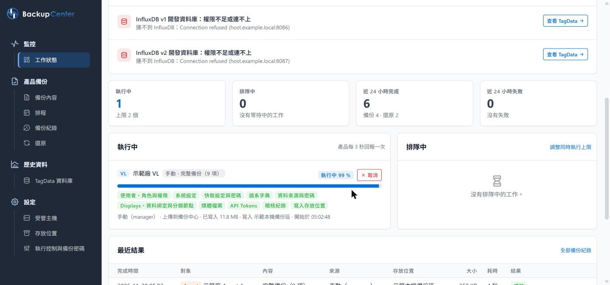
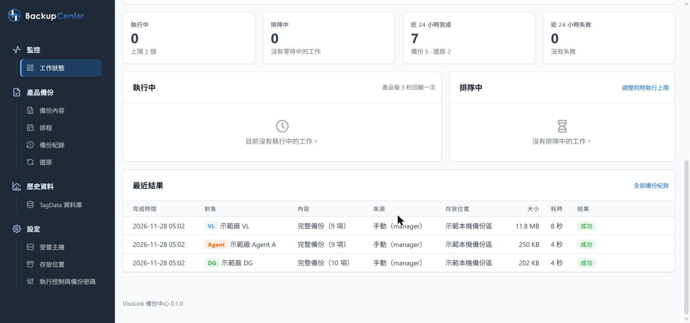

工作狀態
工作狀態是備份中心的首頁：看整體是否正常、有哪些事要處理、哪些工作正在跑或排隊，以及最近的結果。各產品在自己的後端執行備份，進度每 3 秒回報到這裡。
查看整體狀態與統計

- 整體狀態
- 綠色「全部正常」；黃色或紅色表示有事情要處理，件數寫在標題。
- 執行中
- 正在執行的工作數與全系統同時執行上限。
- 排隊中
- 等待執行的工作數。
- 近 24 小時完成／失敗
- 近 24 小時完成的備份與還原數、失敗數。
- 從左側選「工作狀態」，或按左上角 Logo 回到首頁。
- 先看整體狀態橫幅，再看下方統計卡。
知道目前是否有異常、工作量多少。
失敗時先查
- 數字不更新：頁面每 3 秒自動更新；若一直停在「讀取中…」，重新整理頁面或確認備份中心服務是否正常。
處理「需要處理」清單
- 逐項看「需要處理」的標題與說明，例如「尚未設定備份密碼：所有備份與排程都不能執行」。
- 按右邊的按鈕（例如「前往設定備份密碼」）到對應的頁面處理。
- 處理完回到工作狀態，該項目會消失。
「需要處理」清空，整體狀態變成「全部正常」。
第一次安裝後一定會看到「尚未設定備份密碼」。請先完成第 11 章的備份密碼設定。
失敗時先查
- 項目一直在：確認對應頁面已儲存成功；主機連線類的問題要等下一次檢查（每 60 秒）。
查看執行中、排隊中與最近結果
- 執行中
- 每個工作的對象、進度百分比、目前步驟；還原工作另外列出每台主機的運作中／維護中狀態。
- 排隊中
- 排隊順位與排隊原因（例如同一台實體主機已有工作、超過同時執行上限）。
- 最近結果
- 完成時間、對象、內容、來源（手動或排程名稱）、存放位置、大小、耗時、結果。


- 在「執行中」看進度；需要中止時按該工作的「取消」。
- 在「排隊中」看排在第幾位與原因；不需要的工作可按「取消」。
- 在「最近結果」確認成功或失敗；按「全部備份紀錄」到第 6 章查看完整紀錄。
能追蹤每個工作從排隊、執行到完成的狀態。
失敗時先查
- 工作一直排隊：看排隊原因；同一台實體主機一次只跑一個工作，或到第 11 章調整同時執行上限。
- 失敗：看結果欄的說明；常見原因是主機連不到、憑證錯誤或存放位置空間不足。
還原後主機沒切回運作中
- 還原結束後，若某台主機沒能切回原本的模式，「需要處理」會列出該主機與原因。
- 確認主機連線正常後，按「重新切回運作中」。
主機回到運作中，項目從清單消失。
TagData 還原失敗時，DG 會刻意維持維護中且不提供「重新切回運作中」，請再還原一次（第 8 章）。
失敗時先查
- 按了仍失敗：到第 9 章確認該主機的位址與憑證，或到產品自己的管理畫面切換。